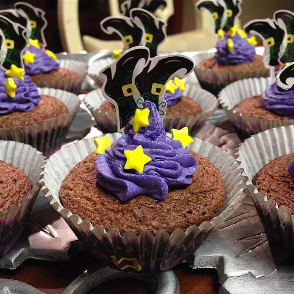

Brownie Cups

Description
Brownie meets cupcake! With a twist.
We all love the corner brownies, well i know i do.
why not get the best of both worlds, cupcakes and
brownies.
Ingredients
- 14 Tablespoons Unsweetened Cocoa Powder
- 1 Cup Butter, Melted
- 3 Tablespoons Veg Oil
- 2 Cup White Sugar
- 3 Eggs
- 2 Teaspoons Vanilla Extract
- 1 Cup Flour
- 1.5 Cups Finely Crushed Animal Cracker Cookies
- 0.5 Cup White Sugar
- 6 Tablespoons Butter, Melted
Steps
- Preheat oven to 350 degrees F (180 degrees C).
Lightly grease 24 muffin cups.
- Beat cocoa powder, 3/4 cup butter, oil, and 2 cups
sugar with an electric mixer in a large bowl until
smooth. Add eggs one at a time, allowing each egg
to blend into butter mixture before adding the
next. Beat in vanilla extract with last egg. Mix
flour mixture into egg mixture until just
incorporated. Fold in walnuts, mixing just enough
to evenly combine.
- Combine animal cracker crumbs, 1/3 cup sugar, and
6 tablespoons butter in a bowl; mix until well
blended. Press cracker mixture into the bottom of
each prepared muffin cup. Pour brownie mixture into
muffin cups, filling 3/4 full.
- Bake in preheated oven until a toothpick inserted in
center comes out clean, 25 to 35 minutes.
Nutritional Facts
Per Serving: 270 calories; protein 3.3g;
carbohydrates 31.5g; fat 15.8g; cholesterol 46.1mg;
sodium 107.1mg.
Return To Home